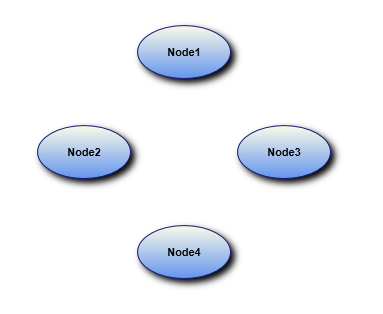

Essential Diagram for WPF provides support to print the diagram shapes with the applied effects. When effects are applied to the nodes, they cannot be printed properly, due to the framework limitation. This feature enables you to overcome this limitation.
Use Case Scenarios
When you want to print a diagram page, in which you have applied effects for the nodes, you can use this feature to achieve this.
Properties
Table 76: Property Table
|
Property |
Description |
Type |
Data Type |
Reference links |
|
CustomEffect |
Gets or sets a value of the applied effect of the Node. |
Dependency property |
Effect |
NA |
Printing the Diagram Shapes with Effects
You can print the diagram shapes with the applied effects using the CustomEffect property. The following code illustrates this:
|
[C#] DropShadowEffect effect = new DropShadowEffect(); effect.BlurRadius = 10;
Node node = new Node();
node.Shape = Shapes.Ellipse; diagramModel.Nodes.Add(node); |
|
[VB] Dim effect As New DropShadowEffect() effect.BlurRadius = 10
Dim node As New Node() node.Shape = Shapes.Ellipse node.CustomEffect = effect diagramModel.Nodes.Add(node) |

Figure 166: Printed Nodes with Effects